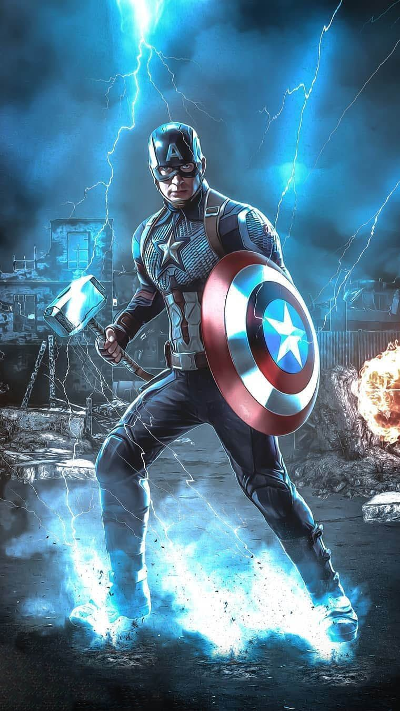

Slide in on Scroll
PELÍCULAS DE MARVEL Últimas noticias Marvel y de actualidad relacionadas con las películas Marvel, sean cine, streaming o cualquier otro formato de distribución de películas de superhéroes de Marvel Cómics. Noticias de películas de Marvel como Capitán América, Iron Man, Thor, los Vengadores, Spider-Man, X-Men, Cuatro Fantásticos, Guardianes de la Galaxia, etc. Categoría que recopila toda las noticias de las películas de la productoras Marvel Studios basada en los propios personajes de Marvel. Los derechos cinematográficos de los personajes de Marvel están repartidos. Es decir, Marvel, por medio de su productora Marvel Studios, solo puede hacer adaptaciones  de determinados personajes, pues algunos de estos están en manos de otros estudios o productoras. Así, por ejemplo, las películas de los X-Men están realizadas por 20th Century Fox. Debido a ello, hablamos de diferentes Universos Cinematográficos para las películas Marvel. Así tenemos el Universo de Spider-Man (en manos de Sony), el Universo de X-Men (en manos de Fox), el Universo de los Cuatro Fantásticos (en manos de Fox), y el resto de personajes de Marvel que sí tiene Marvel Studios. Poco a poco, Marvel Studios está trabajando para conseguir recuperar los derechos de todos sus personajes. Así por ejemplo, la compra en 2019 de Walt Disney de los activos de Century Fox hace que los derechos de los X-Men y los Cuatro Fantásticos estén de nuevo en manos de Marvel Studios, y por tanto puedan formar parte de su universo cinematográfico (el UCM o MCU). Sin embargo, aún no han anunciado planes de películas o series dedicadas a estos grupos de superhéroes.

PELÍCULAS DE MARVEL Últimas noticias Marvel y de actualidad relacionadas con las películas Marvel, sean cine, streaming o cualquier otro formato de distribución de películas de superhéroes de Marvel Cómics. Noticias de películas de Marvel como Capitán América, Iron Man, Thor, los Vengadores, Spider-Man, X-Men, Cuatro Fantásticos, Guardianes de la Galaxia, etc. Categoría que recopila toda las noticias de las películas de la productoras Marvel Studios basada en los propios personajes de Marvel. Los derechos cinematográficos de los personajes de Marvel están repartidos. Es decir, Marvel, por medio de su productora Marvel Studios, solo puede hacer adaptaciones de determinados personajes, pues algunos de estos están en manos de otros estudios o productoras. Así, por ejemplo, las películas de los X-Men están realizadas por 20th Century Fox. Debido a ello, hablamos de diferentes Universos Cinematográficos para las películas Marvel. Así tenemos el Universo de Spider-Man (en manos de Sony), el Universo de X-Men (en manos de Fox), el Universo de los Cuatro Fantásticos (en manos de Fox), y el resto de personajes de Marvel que sí tiene Marvel Studios. Poco a poco, Marvel Studios está trabajando para conseguir recuperar los derechos de todos sus personajes. Así por ejemplo, la compra en 2019 de Walt Disney de los activos de Century Fox hace que los derechos de los X-Men y los Cuatro Fantásticos estén de nuevo en manos de Marvel Studios, y por tanto puedan formar parte de su universo cinematográfico (el UCM o MCU). Sin embargo, aún no han anunciado planes de películas o series dedicadas a estos grupos de superhéroes.